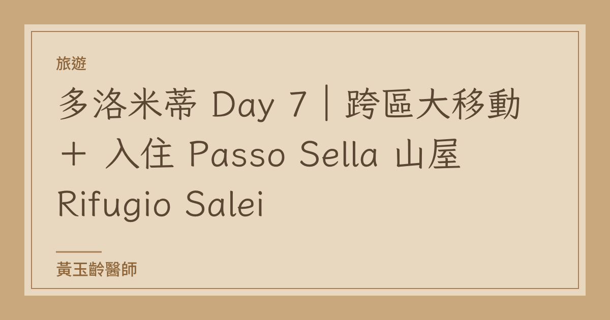

旅遊
多洛米蒂 Day 7｜跨區大移動 ＋ 入住 Passo Sella 山屋 Rifugio Salei
第七天是要從東邊山區前往西邊小鎮的大移動日。我們會在中途的 Passo Sella 做停留，入住一間非常漂亮的山屋 Rifugio Salei，也是我們這趟行程中成本最高的住宿點，但真的很推薦 Rifugio Salei。
原先有點焦慮，因為這天要換很多班公車，稍微有點複雜；不過後來發現其實只需要搭乘四班公車就可以抵達，而且每一班公車的時間銜接都算是非常順暢。九點多從 San Vito 出發，順利在下午一點之前就抵達了 Passo Sella，再聯絡山屋幫我們到公車站做行李與人員接駁，不然要拖著行李走 10 幾分鐘的碎石路上坡。
這段公車路線是：
先搭我們最熟悉的 30 號到 Cortina，之後搭原本從五塔山纜車站回程時搭過的 52 號公車反方向去到 Passo Falzarego，接著轉搭 465 號公車前往 Corvara，再接 472 號公車前往 Passo Sella。
前兩段公車是 Dolomiti Bus (Veneto 系統)，我們都直接從 App 上買票，價格最便宜，它是按照里程級距來計算票價的（ 5 公里、12 公里、20 公里分別是 __/2.3/2.9 歐元）。像我們之前去索拉皮斯湖就是計 12 公里的級距，去五塔山則是 20 公里。上車之後掃描司機旁邊的 QR Code 就能讓車票啟用並扣款成功。
後面的 465 號與 472 號都是南提洛（Südtirolmobil）的公車，計價方式昂貴許多，它是計算每公里票價，所以我們 465 號公車花了 9.5 歐元，472 號花了 12.5 歐元。不過，如果前後兩天有住在 Val Gardena 地區（例如 Dobbiaco, Ortisei）的合作旅宿，通常會給予 Val Gardena Mobil Card (Guest Pass)，搭乘南提洛公車與火車就完全免費了。例如我們之前在 Dobbiaco 住的民宿就有拿到這張 Südtirolmobil Pass。只不過我們這次住的山屋（Rifugio Salei）雖然在 Passo Sella，但他距離南提洛的免費區域界線大概差了 200 公尺，所以很可惜這一天不能使用免費交通卡。
抵達山屋安頓好之後還有時間，我們大約兩點半從山屋出發，去搭乘非常有特色的 #18 號纜車（也就是大家俗稱的「棺材纜車」）。這是一個直立式的站立纜車，上下纜車的過程都很刺激，要用小跑步的方式跑進去，但工作人員都會在旁邊熱情協助，並跟我們口頭確認「Ready?」再加擊個掌之後協助我們跳上纜車。纜車沿路的風景也超級美，前段是有乳牛在放牧的綠色草原，再來會經過石頭城，最後是一段陡峭的岩石山體往上攀升，接著就到了 Sassolungo 山口 (Forcella del Sassolungo)。這裡地勢很高，風很大也有一點冷，需要穿上防風保暖外套。我們在鞍部（山口）附近走走、坐下來畫畫，大概待了一個半小時之後，再搭乘 #18 號纜車下山，重新體驗一次很好玩的直立式站立纜車。整個纜車單程大約15 分鐘。
回到山屋，準備吃晚餐。這間山屋（Rifugio Salei）真的超級漂亮！精緻的木造小屋建築。我們的住宿是一泊二食，除了酒水以外，合作餐廳晚餐隨便點都不用再多付錢，這家餐廳不論是前菜、湯、主菜都非常好吃！去餐廳的路上剛好會經過一小個山坡，那裡就是土撥鼠的家，所以我們在傍晚的時候看到了很多隻可愛的土撥鼠，牠們都很膽小、不能太接近，只能遠遠地拍照。山屋還有室內外相通的溫水游泳池設施，超級享受，可以面對著漂亮的山景一邊游泳。另外，早餐則是山屋的 Buffet，也非常豐盛喔！